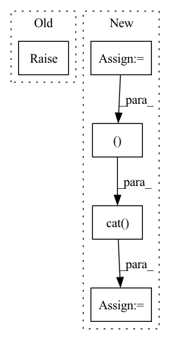

Pattern ID :403
Before Change
self,
semantic_token_ids
):
raise NotImplemented
class CoarseTransformer(nn.Module):
def __init__(After Change
tokens = self.semantic_embedding(ids)
start_tokens = repeat(self.start_token, "d -> b 1 d", b = ids.shape[0])
tokens = torch.cat( (start_tokens, tokens ), dim = 1)
tokens = self.transformer(tokens)
logits = self.to_logits(tokens)
if not return_loss:In pattern: SUPERPATTERN
Frequency: 4
Non-data size: 5
Instances Fragment ID: 1572953
Project Name: lucidrains/audiolm-pytorch
Commit Name: fac3152e10621496e88b6236aa638d21fa9806af
Time: 2022-11-04
Author: lucidrains@gmail.com
File Name: audiolm_pytorch/audiolm_pytorch.py
M Class Name: SemanticTransformer
N Class Name: SemanticTransformer
M Method Name: forward(3)
N Method Name: forward(2)
M Parent Class: nn.Module
N Parent Class: nn.Module
M File Name: audiolm_pytorch/audiolm_pytorch.py
N File Name: audiolm_pytorch/audiolm_pytorch.py
M Start Line: 558
M End Line: 558
N Start Line: 562
N End Line: 584
Before Change
coarse_token_ids,
fine_token_ids
):
raise NotImplemented
// audio LM
After Change
coarse_tokens = self.coarse_embedding(coarse_token_ids)
fine_tokens = self.fine_embedding(fine_token_ids)
start_tokens = repeat(self.start_token, "d -> b 1 d", b = b)
tokens = torch.cat( (start_tokens, coarse_tokens, fine_tokens ), dim = 1)
tokens = self.transformer(tokens)
pred_coarse_tokens, pred_fine_tokens = tokens[:, :n], tokens[:, n:]
Fragment ID: 1572956
Project Name: lucidrains/audiolm-pytorch
Commit Name: 9c6785b8998ef733d751bf99a47b8daa39795fda
Time: 2022-11-03
Author: lucidrains@gmail.com
File Name: audiolm_pytorch/audiolm_pytorch.py
M Class Name: FineTransformer
N Class Name: FineTransformer
M Method Name: forward(3)
N Method Name: forward(3)
M Parent Class: nn.Module
N Parent Class: nn.Module
M File Name: audiolm_pytorch/audiolm_pytorch.py
N File Name: audiolm_pytorch/audiolm_pytorch.py
M Start Line: 580
M End Line: 580
N Start Line: 599
N End Line: 617
Before Change
if weight is not None:
if self.weight is not None:
raise DGLError("External weight is provided while at the same time the"
" module has defined its own weight parameter. Please"
" create the module with flag weight=False.")
else:
After Change
assert edge_weight is None or edge_weight.size(0) == graph.num_edges()
if self._add_self_loop:
graph = graph.add_self_loop()
if edge_weight is not None:
size = (graph.num_nodes() = torch.cat( [edge_weight, self_loop])
else:
graph = graph.local_var()
Fragment ID: 1572951
Project Name: edisonleeeee/greatx
Commit Name: c43665fd30401c63acbd50175da1880509a52d21
Time: 2021-12-06
Author: cnljt@outlook.com
File Name: graphwar/nn/sgconv.py
M Class Name: SGConv
N Class Name: SGConv
M Method Name: forward(4)
N Method Name: forward(4)
M Parent Class: nn.Module
N Parent Class: nn.Module
M File Name: graphwar/nn/sgconv.py
N File Name: graphwar/nn/sgconv.py
M Start Line: 141
M End Line: 176
N Start Line: 144
N End Line: 171